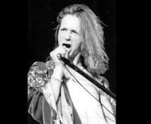
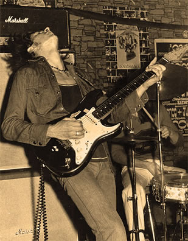
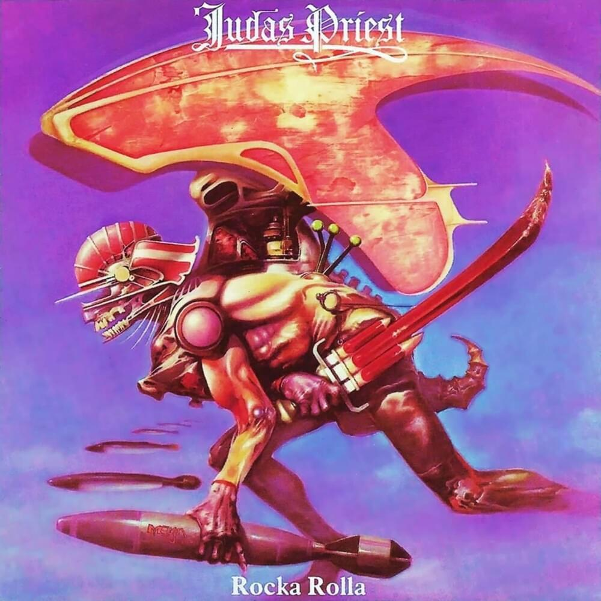
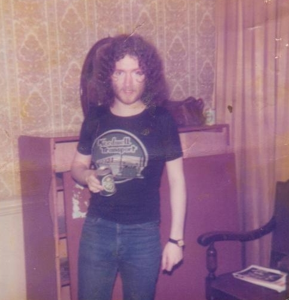

Historia
O Judas Priest Original
A primeira encarnação da banda surge em 1969, em West Bromwich, um povoado próximo a cidade de Birmingham
composta por Al Atkins nos vocais, Bruno Stapenhill no baixo, John Perry na guitarra e
John Partridge na bateria. A banda escolheu o nome Judas Priest como homenagem à canção 'The Ballad of
Frankie Lee and Judas Priest', de Bob Dylan.
Dias após a formação da banda, o guitarrista John Perry se envolveu em um acidente de carro e acabou por falecer. A banda fez audições com alguns guitarristas locais, incluindo um jovem chamado K.K. Downing, que foi rejeitado pela falta de experiência. O escolhido para a vaga foi Ernie Chataway.
A banda conseguiu fazer uma pequena turnê por bares na Inglaterra, na qual conseguiram um contrato com a gravadora Immediate Records, que lançaria seu disco de estreia. A gravadora em questão, pouco tempo após isso, quebrou, e a banda decidiu se separar. Assim acabava o Judas Priest.
Dias após a formação da banda, o guitarrista John Perry se envolveu em um acidente de carro e acabou por falecer. A banda fez audições com alguns guitarristas locais, incluindo um jovem chamado K.K. Downing, que foi rejeitado pela falta de experiência. O escolhido para a vaga foi Ernie Chataway.
A banda conseguiu fazer uma pequena turnê por bares na Inglaterra, na qual conseguiram um contrato com a gravadora Immediate Records, que lançaria seu disco de estreia. A gravadora em questão, pouco tempo após isso, quebrou, e a banda decidiu se separar. Assim acabava o Judas Priest.
 Um dos únicos registros do Judas Priest original.
Um dos únicos registros do Judas Priest original.
O Novo Judas Priest
Após o fim da banda original, no início de 1970, Al Atkins foi para Birmingham, onde se impressionou por uma banda local
chamada Freight, composta pelo guitarrista K.K. Downing, baixista Ian Hill e baterista John Ellis.
O grupo não possuía um vocalista, e Al se ofereceu para ocupar o posto.
Atkins apresentou composições de sua antiga banda e fez uma proposta para mudarem o nome do grupo para Judas Priest, que foi aceita pela banda.
Entre os anos de 1970 e 1973 a banda fez duas turnês abrindo shows de grandes nomes da cena britânica como Thin Lizzy, UFO, Status Quo, Gary Moore e Slade, passando por duas mudanças de baterista nesse período, com passagem de Alan 'Skip' Moore e estabelecendo a formação com Chris 'Congo' Campbell nas baquetas.
Atkins apresentou composições de sua antiga banda e fez uma proposta para mudarem o nome do grupo para Judas Priest, que foi aceita pela banda.
Entre os anos de 1970 e 1973 a banda fez duas turnês abrindo shows de grandes nomes da cena britânica como Thin Lizzy, UFO, Status Quo, Gary Moore e Slade, passando por duas mudanças de baterista nesse período, com passagem de Alan 'Skip' Moore e estabelecendo a formação com Chris 'Congo' Campbell nas baquetas.
 Judas Priest em 1972.
Judas Priest em 1972. Da esquerda para a direita: o baterista Chris 'Congo' Campbell, o baixista Ian Hill, o guitarrista K.K. Downing e o vocalista Al Atkins.
Apesar de fazerem turnês e tocarem junto de bandas maiores que já faziam algum sucesso na época,
o aspecto financeiro era um grande desafio. O dinheiro dos shows mal custeava as viagens das turnês e a banda
parecia um negócio insustentável, o que motivou a saída de Al Atkins do grupo no início de 1973, que havia tido uma
filha e precisava de um emprego estável.
O Novissimo Judas Priest
A banda passava por problemas financeiros e agora não tinha um frontman à sua frente. Foi nesse momento que surgiu
Rob Halford.
Rob era vocalista de uma banda local chamada Hiroshima e irmão da noiva de Ian Hill. Um dia, na casa da família dos Halford, Ian ouviu Rob cantando em frente ao rádio e se impressionou com seu alcance vocal e agudos estridentes.
Ian e K.K. chamaram Rob Halford para entrar na banda, que de prontidão aceitou, e Al Atkins os deu aval para continuar usando o nome Judas Priest e tocando as canções que ele compôs.
Chris Campbell deixou a banda pouco tempo após isso, dando lugar para o companheiro de Hiroshima de Rob Halford, John Hinch.
Rob era vocalista de uma banda local chamada Hiroshima e irmão da noiva de Ian Hill. Um dia, na casa da família dos Halford, Ian ouviu Rob cantando em frente ao rádio e se impressionou com seu alcance vocal e agudos estridentes.
Ian e K.K. chamaram Rob Halford para entrar na banda, que de prontidão aceitou, e Al Atkins os deu aval para continuar usando o nome Judas Priest e tocando as canções que ele compôs.
Chris Campbell deixou a banda pouco tempo após isso, dando lugar para o companheiro de Hiroshima de Rob Halford, John Hinch.

Rob Halford em meados dos anos 70.
Ainda em 1973, a banda lançou de forma independente uma fita demo e saíram em turnê divulgando a mesma. A fita chamou
a atenção da gravadora Gull Records, que ofereceu em 1974 uma proposta de gravação para um álbum, com a condição de
que a banda deveria somar à sua formação um trompetista ou tecladista.
A banda não concordou com a ideia, mas como precisavam de um selo para gravarem e lançarem um disco, fizeram uma contraproposta de contratar um segundo guitarrista. A gravadora aceitou, e a banda chamou o guitarrista e vocalista da The Flying Hat Band, Glenn Tipton, para o posto.
A banda não concordou com a ideia, mas como precisavam de um selo para gravarem e lançarem um disco, fizeram uma contraproposta de contratar um segundo guitarrista. A gravadora aceitou, e a banda chamou o guitarrista e vocalista da The Flying Hat Band, Glenn Tipton, para o posto.

Glenn Tipton quando tocava na The Flying Hat Band.
A banda gravou e lançou em 1974 seu disco de estreia, Rocka Rolla, produzido por Rodger Bain, produtor dos lendários
três primeiros discos do Black Sabbath. Apesar do peso do nome do produtor, a banda não se agradou com o resultado final,
pois Rodger impedia a banda de seguir em uma linha mais pesada com o som, chegando até a barrar a gravação de algumas
canções do repertório da banda. A capa do álbum também não agradou a banda, escolhida pela gravadora com o objetivo
de passar uma imagem mais próxima das bandas de hard rock e rock progressivo da época.
O disco não foi um sucesso em vendas ou crítica e é considerado um dos discos mais desenquadrados da discografia da banda. Ainda assim, rendeu uma turnê nacional pela Inglaterra e a primeira passagem da banda pelo leste europeu, com datas em países como Noruega, Suécia e Dinamarca. Antes do início da turnê, John Hinch foi demitido do grupo substituído pelo antigo baterista Alan Moore.
O disco viria a ser relançado em 1987, com uma nova arte para a capa e outro logo que passassem mais a imagem de uma banda de heavy metal.
O disco não foi um sucesso em vendas ou crítica e é considerado um dos discos mais desenquadrados da discografia da banda. Ainda assim, rendeu uma turnê nacional pela Inglaterra e a primeira passagem da banda pelo leste europeu, com datas em países como Noruega, Suécia e Dinamarca. Antes do início da turnê, John Hinch foi demitido do grupo substituído pelo antigo baterista Alan Moore.
O disco viria a ser relançado em 1987, com uma nova arte para a capa e outro logo que passassem mais a imagem de uma banda de heavy metal.
 Capa original do disco Rocka Rolla.
Capa original do disco Rocka Rolla.

Capa alternativa lançada em 1987.
Estabelecimento
A banda entrou em estúdio para gravar seu segundo disco no final de 1975. O orçamento era extremamente curto (cerca de
2000 libras), e a banda se organizou de forma restrita para conseguir gravar o disco da melhor forma possível, com os
integrantes da banda assumindo compromissos com empregos comuns em paralelo e se limitando a uma única refeição diária
para poderem maximizar o orçamento para a gravação.
Em 1976, foi lançado Sad Wings of Destiny, o segundo disco do Judas Priest. Este foi um marco não só para a banda, mas para toda a história do heavy metal. Durante os anos 70, o termo 'heavy metal' não necessariamente definia um gênero musical, sendo mais usado pela imprensa como uma forma pejorativa de se referir às bandas britânicas mais barulhentas que surgiam naquele período, tendo origem como uma maneira de desprezar bandas como o Black Sabbath que vinham de Birmingham, cidade muito conhecida por ser uma cidade de trabalhadores da indústria metalúrgica.
O Judas Priest, também originário de Birmingham, foi a primeira banda a assumir o heavy metal como sua identidade, e estabeleceu neste disco todos os conceitos primários do que é uma banda de metal. Riffs cortantes, harmonias de guitarras gêmeas que dividiam os solos e bases, bateria atravessada e vocais agudos, em canções que eram ao mesmo tempo complexas e diretas, agressivas e melodiosas.
Sad Wings of Destiny não foi um sucesso comercial, mas foi muito elogiado pela crítica especializada e foi o primeiro passo para o Judas Priest tomar seu lugar no Olimpo da música pesada.
O disco apresentava em sua arte de capa um anjo caído em um cenário infernal, com um novo logotipo com influência gótica, além do símbolo da cruz que se tornaria o maior ícone da banda aparecendo no colar do anjo. Liricamente também assumiu uma postura mais literária, com músicas que contavam histórias e descorriam sobre temas de fantasia, terror, religião e sociedade.
Em 1976, foi lançado Sad Wings of Destiny, o segundo disco do Judas Priest. Este foi um marco não só para a banda, mas para toda a história do heavy metal. Durante os anos 70, o termo 'heavy metal' não necessariamente definia um gênero musical, sendo mais usado pela imprensa como uma forma pejorativa de se referir às bandas britânicas mais barulhentas que surgiam naquele período, tendo origem como uma maneira de desprezar bandas como o Black Sabbath que vinham de Birmingham, cidade muito conhecida por ser uma cidade de trabalhadores da indústria metalúrgica.
O Judas Priest, também originário de Birmingham, foi a primeira banda a assumir o heavy metal como sua identidade, e estabeleceu neste disco todos os conceitos primários do que é uma banda de metal. Riffs cortantes, harmonias de guitarras gêmeas que dividiam os solos e bases, bateria atravessada e vocais agudos, em canções que eram ao mesmo tempo complexas e diretas, agressivas e melodiosas.
Sad Wings of Destiny não foi um sucesso comercial, mas foi muito elogiado pela crítica especializada e foi o primeiro passo para o Judas Priest tomar seu lugar no Olimpo da música pesada.
O disco apresentava em sua arte de capa um anjo caído em um cenário infernal, com um novo logotipo com influência gótica, além do símbolo da cruz que se tornaria o maior ícone da banda aparecendo no colar do anjo. Liricamente também assumiu uma postura mais literária, com músicas que contavam histórias e descorriam sobre temas de fantasia, terror, religião e sociedade.
 Capa do disco Sad Wings of Destiny.
Capa do disco Sad Wings of Destiny.
O sucesso de crítica de Sad Wings of Destiny abriu portas ao Judas Priest para um contato com a CBS Records,
que ofereceu um contrato para a banda. Com o novo acordo, o grupo saiu do guarda-chuva da Gull Records e perdeu todos
os direitos dos dois primeiros álbuns. A nova gravadora disponibilizou um orçamento de 60000 libras para o próximo
disco da banda, que seria produzido pelo lendário baixista do Deep Purple, Roger Glover.
Lançado em 1977, Sin After Sin foi o primeiro trabalho da banda a entrar na parada de sucessos inglesa, alcançando a 23ª posição. Segue na mesma linha estética, temática e sonora do trabalho anterior, aperfeiçoando tudo o que foi havia sido apresentado, tendo como grande novidade o bumbo duplo aplicado pelo baterista Simon Phillips, que se tornaria também uma característica essencial do som do heavy metal. Alan Moore havia deixado a banda, e Simon foi contratado como músico de estúdio. Para a turnê de divulgação do álbum a banda recrutou o baterista Les Binks, que fecha a primeira formação clássica do Judas.
Lançado em 1977, Sin After Sin foi o primeiro trabalho da banda a entrar na parada de sucessos inglesa, alcançando a 23ª posição. Segue na mesma linha estética, temática e sonora do trabalho anterior, aperfeiçoando tudo o que foi havia sido apresentado, tendo como grande novidade o bumbo duplo aplicado pelo baterista Simon Phillips, que se tornaria também uma característica essencial do som do heavy metal. Alan Moore havia deixado a banda, e Simon foi contratado como músico de estúdio. Para a turnê de divulgação do álbum a banda recrutou o baterista Les Binks, que fecha a primeira formação clássica do Judas.
 Capa do disco Sin After Sin.
Capa do disco Sin After Sin.

O baterista Les Binks.